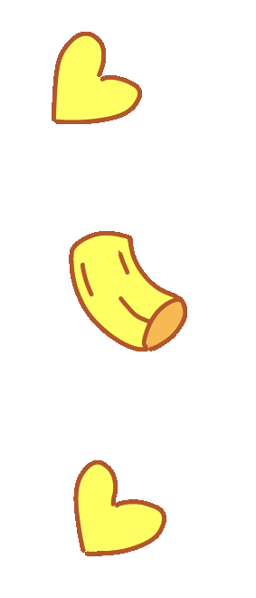

Tên bài hát hiện tại
25:00
⚙️
BẮT ĐẦU
KẾT THÚC
Cài đặt
Thời gian
Thời gian tập trung (phút):
Thời gian nghỉ (phút):
Video / Playlist
Link playlist:
XÁC NHẬN
Phát ngẫu nhiên
Lặp lại bài hiện tại
Dừng video khi nghỉ
Danh sách video
LƯU
HỦY